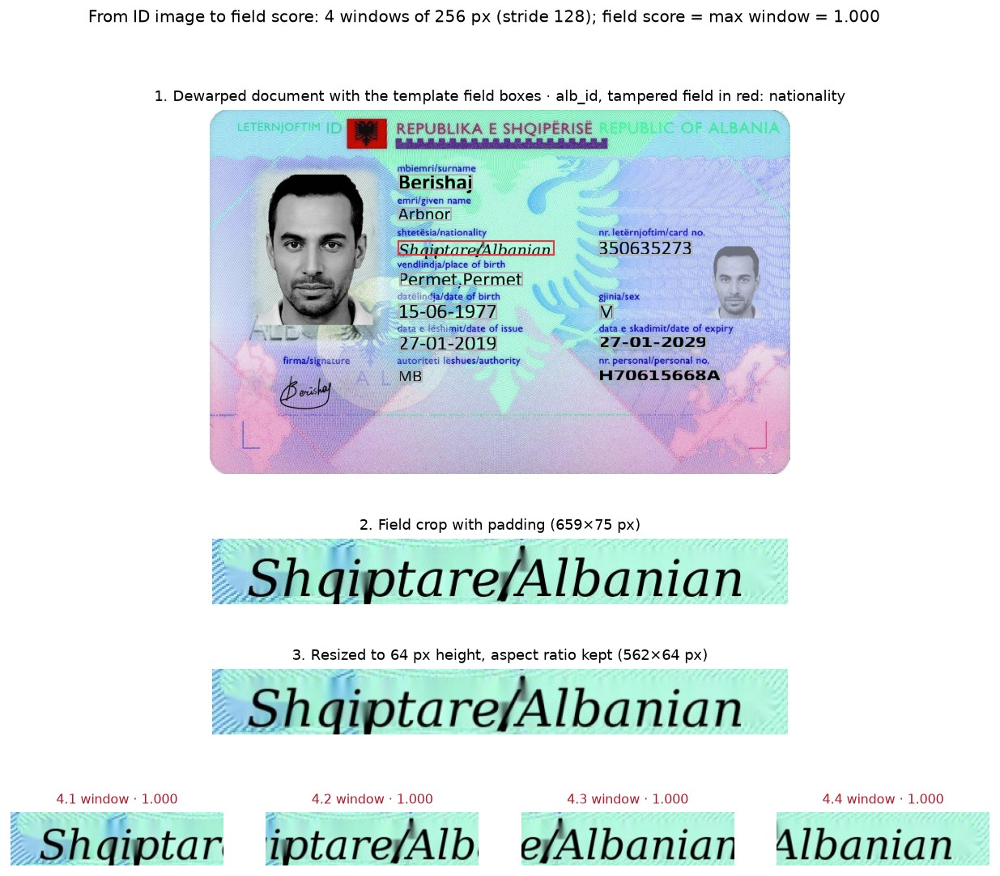
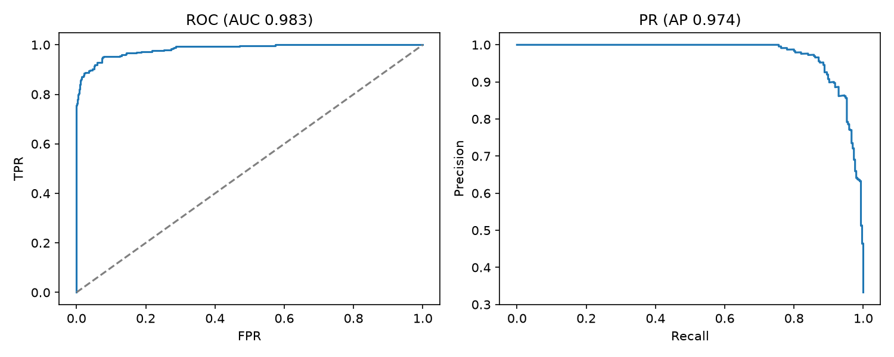
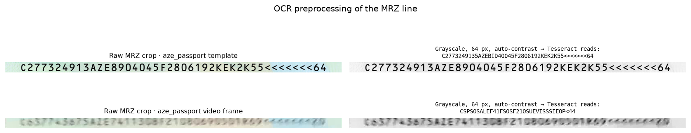
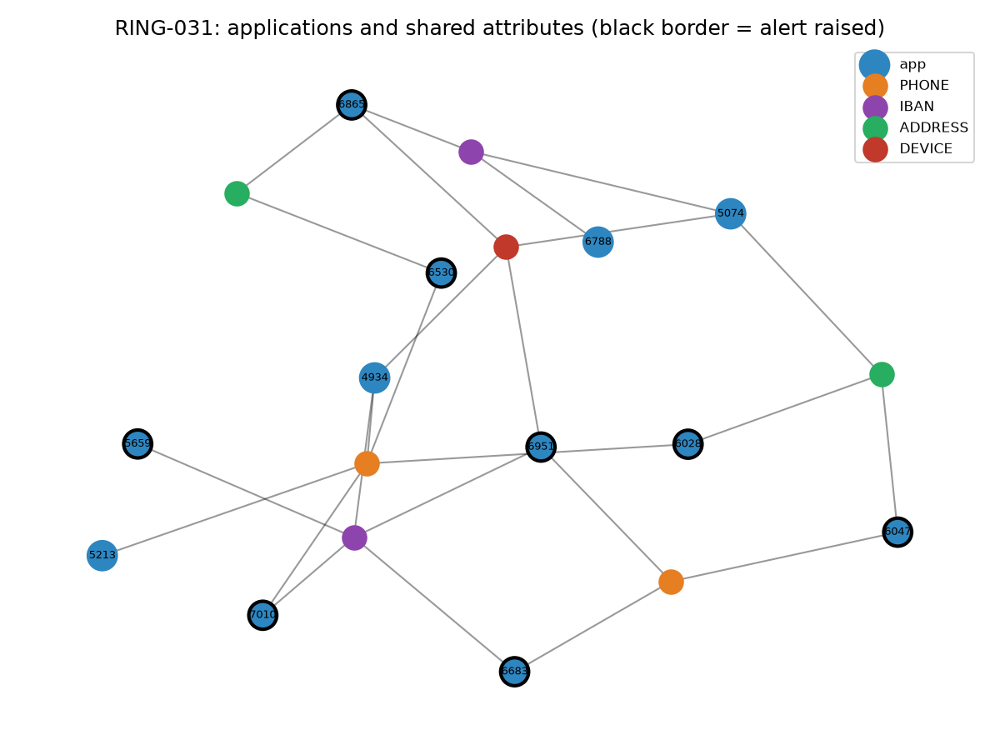

1. Introduction
This project implements a document and identity fraud detection system for a savings-finance application flow, where customers save towards a home or vehicle and are financed at an allocation month. It covers the whole chain: a field-level CNN that finds forged fields on ID images, OCR checks on the machine-readable zone (MRZ) and dates, national ID (TCKN) check digits, point-in-time SQL features over the application history, a rule engine kept in YAML, a LightGBM model, a hybrid score, an alert threshold set by analyst capacity, monitoring with early-warning indicators, a scoring API and an analyst dashboard.

| Forged ID detection (SIDTD test split, documents never seen in training) | Document ROC-AUC 0.983, PR-AUC 0.974; 92.2 % of forged documents caught with 5.9 % of genuine documents sent to review |
| Localisation | The highest-scoring field is the tampered field in 91.2 % of flagged forgeries |
| Application fraud (out-of-time test, 11,863 applications, 511 frauds) | Hybrid score PR-AUC 0.541 against 0.493 for the rules; at a 2 % alert rate it catches 36.2 % of fraud applications and 44.1 % of fraud loss, against 33.5 % and 40.1 % |
| Analyst capacity (5 % alert rate) | Hybrid and rules catch 56.9 % and 57.1 % of fraud applications and about 67.5 % of fraud loss |
| New fraud type (device farm, from 2026-04) | The rule set catches 12.8 %; two candidate rules raise it to 82.0 % in the back-test, for 0.9 points more alert volume |
The forgery CNN is not the main result. The device-farm pattern that appears in April 2026 slips past every production rule because the phone numbers, IBANs and addresses are all different, and it shows up only in the monthly recall by scenario and in a key risk indicator (Section 10.5). Two candidate rules, back-tested on recent applications, close that gap.
Core Features:
- Image-processing pipeline on dewarped ID images: template-guided field cropping, aspect-preserving resizing and sliding windows
- Field-level forgery CNN (ResNet-18, timm) that scores every text field of an ID image and names the most suspicious one
- Train / validation / test split grouped by source document, with documents mixed by Crop_and_Replace joined into one group, so no document leaks across splits
- Platt calibration on the validation split, an operating point fixed at 5 % of genuine documents, and ONNX export for CPU inference
- ICAO 9303 TD3 MRZ check digits, MRZ ↔ visual zone comparison and date-logic checks on Tesseract OCR output
- Turkish national ID number (TCKN) check-digit validation in Python and as a DuckDB SQL macro, tested against each other
- Synthetic savings-finance data: 30,114 applications, payments and contracts with seven fraud scenarios and deliberate noise
- Point-in-time SQL features in DuckDB: identity velocity, shared phone / IBAN / address / device / IP network, guarantor reuse, agent history, income ratios
- Rule engine that reads SQL conditions, weights and owner units from YAML
- LightGBM trained only on labels confirmed by the training cut-off, with a 90-day label-maturity gap
- Rules, LightGBM and a hybrid score compared at the same alert volume, on recall and on fraud loss stopped
- Monthly precision, recall and PSI, recall by scenario, five KRIs with RED / AMBER / GREEN status, and a back-test for candidate rules
- Image-processing figures built from the test split: pipeline stages, field localisation, genuine vs. forged patches, OCR preprocessing
- Management report and fraud-ring case study (Markdown + HTML), a Streamlit analyst dashboard and a FastAPI scoring API
2. Methodology / Approach
Each decision uses two inputs: the ID image and the application. The image is scored by the CNN and checked by OCR. The application is turned into point-in-time features in SQL. Rules and LightGBM both read the same feature table, and the hybrid score combines them.
2.1 System Architecture
ID image ──► field-level forgery CNN ──► doc score + suspicious field ─┐
└─► OCR: MRZ check digits, MRZ↔visual zone, date logic ───────┤
application ─► point-in-time SQL features (velocity, shared phone/IBAN/ ├─► rule engine (YAML/SQL) ─┐
device/guarantor, agent history, income ratios) ────────┘ LightGBM ──────────────┴─► hybrid score
► capacity-based alert
► monitoring, KRIs, reports| Stage | What it does | Why |
|---|---|---|
| Field patches | Crops every text field with its template box (plus padding) and resizes it to 64 px height | SIDTD forgeries change a single field. A whole-document classifier would downsample that edit away |
| Forgery CNN | ResNet-18 scores 256-px windows of each field patch with stride 128; field score = max window, document score = max field | Small edits stay visible, and the arg-max field tells the analyst where to look |
| OCR checks | Tesseract reads the MRZ and the visual-zone dates (grayscale, bicubic upscaling, auto-contrast); TD3 check digits, MRZ ↔ visual-zone agreement and date logic | Rule-based checks that need no training data. Their false-positive rate on genuine documents is measured before they become rules |
| Features | One SQL file (sql/01_features.sql) that joins each application only to applications that arrived earlier |
The same query can run at decision time, so no feature sees the future |
| Rules | 15 SQL conditions in configs/rules.yaml, each with a weight and an owner unit; score = min(100, sum of weights) |
Analysts tune thresholds without code changes, and every alert has a reason and an owner |
| LightGBM + hybrid | LightGBM on the same features, Platt-calibrated; hybrid = ½ · rule score / 100 + ½ · model score | The model catches combinations the rules miss; the rules stay explainable |
| Alert threshold | The threshold at which 5 % of applications go to review | The analysts' capacity is fixed; methods are compared at the same alert volume |
2.2 Image Processing
The document model never sees a whole ID card. Every image goes through the same four stages in training, in evaluation and in the API:
- Dewarped input. SIDTD video frames come perspective-corrected to the template size (
clips_cropped), so the field boxes annotated on the template land on the same pixels in every frame of that document. - Field cropping. Each text field is cut out with its template box plus padding (6 px and 12 % of the box), so the edges of a pasted or rewritten field stay inside the crop. Photo, face, signature and the document outline are skipped.
- Resizing. The crop is resized to 64 px height with bilinear interpolation, keeping its aspect ratio so characters are not stretched.
- Sliding windows. The patch is split into 256 px windows with stride 128. Short patches are centred on grey padding. Windows are normalised with ImageNet mean and standard deviation; during training one random window per patch is used, with brightness and contrast jitter (×0.8–1.2, ±20).
The field score is the highest window score, and the document score is the highest field score. The API, which does not know the source document, resizes the upload to the template size and uses the median box of every field for that document type, widened by 15 %.

Image: SIDTD [1], CC BY 4.0. Field boxes, crops and scores added.
The OCR checks use their own preprocessing: the line is cropped with less padding, converted to grayscale, upscaled to 64 px with bicubic interpolation and contrast-stretched before Tesseract reads it in single-line mode (--psm 7) with a character whitelist (Section 10.2).
2.3 Implementation Strategy
- The code is a small installable package (
src/docfraud/) with one module per concern and one numbered script per pipeline step (scripts/00_…toscripts/13_…).run_all.shruns them in order and can resume from any step. - Every path and parameter comes from
configs/config.yamlthroughdocfraud.config. SettingDOCFRAUD_CONFIGpoints the whole pipeline at another file. - The split is grouped by source document. Crop_and_Replace forgeries combine two documents, so those groups are merged with union-find before splitting.
- Synthetic applications take their ID images only from the SIDTD test split, so the document score the rules see is out-of-sample.
- Features are point-in-time. Every link and velocity feature uses
b.app_ts < a.app_ts. - LightGBM is trained on applications before 2026-03-01 minus 90 days and only on frauds confirmed by 2026-03-01: 182 of the 392 frauds in that window. Later applications are the out-of-time test.
- Platt scaling, not isotonic regression, calibrates the model score, because isotonic creates ties right at the alert threshold.
- New rules go to
configs/rules_candidate.yamland are back-tested on recent data before promotion. - The synthetic data contains noise on purpose: families at one address, returning customers, genuinely high earners, shared branch tablets, real credit defaults and OCR errors. No rule is a perfect proxy for the label.
run_all.shcopies every figure to the project root asDocument-and-Identity-Fraud-Detection-*.png/*.jpgfor this README. Figures built from ID images are saved as JPEG, charts as PNG.
3. Mathematical Framework
3.1 National ID Number (TCKN) Check Digits
For an 11-digit number $d_1 \dots d_{11}$ with $d_1 \neq 0$:
$$d_{10} = \left(7 \sum_{i \in \{1,3,5,7,9\}} d_i - \sum_{i \in \{2,4,6,8\}} d_i\right) \bmod 10, \qquad d_{11} = \left(\sum_{i=1}^{10} d_i\right) \bmod 10$$
3.2 MRZ Check Digits (ICAO 9303)
Characters map to values ($0$–$9$ → 0–9, $A$–$Z$ → 10–35, < → 0) and are weighted cyclically by $(7, 3, 1)$:
$$c = \left(\sum_{i} v(x_i) \cdot w_{i \bmod 3}\right) \bmod 10$$
The second TD3 line carries check digits for the document number, birth date, expiry date, optional data and a composite of all four.
3.3 Document Score and Calibration
For field patches $f$ of document $D$, each split into windows $w$, with CNN logit $z(w)$:
$$z(D) = \max_{f \in D} \max_{w \in f} z(w), \qquad s(D) = \sigma\left(a \cdot z(D) + b\right)$$
$a$ and $b$ are fitted by logistic regression (Platt scaling) on the validation split. The operating threshold is the score above which 5 % of genuine validation documents fall.
3.4 Training Loss
Binary cross-entropy on field windows with the positive class weighted by the class ratio:
$$\mathcal{L} = -\frac{1}{N}\sum_{i}\left[p_w \, y_i \log \sigma(z_i) + (1 - y_i) \log\left(1 - \sigma(z_i)\right)\right], \qquad p_w = \frac{1 - \bar{y}}{\bar{y}}$$
3.5 Rule and Hybrid Scores
$$\text{rule score} = \min\left(100, \sum_{r \text{ fired}} w_r\right), \qquad \text{hybrid} = \frac{1}{2} \cdot \frac{\text{rule score}}{100} + \frac{1}{2} \cdot \sigma\left(a \cdot \text{logit}(p_{\text{LGBM}}) + b\right)$$
Rule decision bands: DECLINE at 70 or more, REVIEW from 30 to 69, APPROVE below 30.
3.6 Capacity Curve
Applications are sorted by score. At alert rate $r$ the top $k = \lfloor r N \rceil$ are reviewed:
$$\text{recall}(r) = \frac{\sum_{i \le k} y_i}{\sum_i y_i}, \qquad \text{loss recall}(r) = \frac{\sum_{i \le k} y_i \, L_i}{\sum_i y_i \, L_i}$$
3.7 Population Stability Index
With quantile bins from the baseline months (2025-01 to 2025-06), $e_j$ the baseline share and $a_j$ the current share in bin $j$:
$$\text{PSI} = \sum_{j} (a_j - e_j) \ln \frac{a_j}{e_j}$$
4. Dataset
4.1 Datasets
| Data | Source | Used for |
|---|---|---|
SIDTD templates and clips (templates.zip, clips_cropped.zip) |
Synthetic dataset of ID and Travel Documents [1], CC BY 4.0 | Forgery CNN, OCR checks, ID images of the synthetic applications |
| Applications, payments, contracts | Generated by src/docfraud/data/synthetic.py (seed 42) |
Features, rules, LightGBM, monitoring, reports |
SIDTD holds ten document types (Albanian, Spanish, Estonian, Finnish and Slovak ID cards; Azerbaijani, Greek, Latvian and Serbian passports; Russian internal passport). Forgeries change one field, either by inpainting and rewriting it (Inpaint_and_Rewrite) or by pasting the same field from another document (Crop_and_Replace).
| Split | Genuine images | Forged images | Groups (genuine / forged) |
|---|---|---|---|
| train | 4,879 | 4,044 | 649 / 455 |
| val | 620 | 393 | 139 / 99 |
| test | 592 | 295 | 139 / 95 |
4.2 Synthetic Applications
30,114 applications from 2025-01-01 to 2026-09-30 across 30 branches and 220 agents, with 290,120 payment rows and one contract per application. 1,114 applications (3.70 %) are fraud:
| Scenario | Applications | Fraud loss (TRY) | How it looks in the data |
|---|---|---|---|
FRAUD_RING |
311 | 59.8 M | Different identities share phone, IBAN, address or device; one branch and agent; 4–12 applications in 45 days |
AGENT_FRAUD |
157 | 5.4 M | An agent's applications are cancelled 45–100 days later; month-end clustering |
INCOME_FRAUD |
150 | 233.3 M | Income 3–6× the occupation median, unexplained down payment, fast allocation, then default |
FORGED_ID |
150 | 65.1 M | Forged SIDTD image, sometimes an invalid national ID number, the same identity at several branches |
DEVICE_FARM (from 2026-04) |
133 | 5.6 M | 6–15 identities from one mobile device and one /24 IP network in 10 days; everything else differs |
SYNTHETIC_ID |
120 | 22.0 M | Invalid national ID number, age 19–25, high income, online at night |
GUARANTOR_FRAUD |
93 | 5.6 M | One guarantor on 3–6 unrelated applications, sometimes with an invalid ID number |
docs/fraud_scenarios.md maps every scenario to the controls that catch it and the unit that owns them.
4.3 Leakage Controls
- No source document appears in more than one split; the check runs in step 02.
- Applications draw ID images from the test split only.
- Features look only backwards in time.
- LightGBM sees only fraud labels confirmed before the training cut-off, and the newest 90 days before the cut are dropped because their outcome is not known yet.
4.4 Evaluation Metrics
| Level | Metrics |
|---|---|
| Document | ROC-AUC, PR-AUC, recall at 1 / 5 / 10 % false-positive rate on genuine documents, recall and FPR at the operating point, by fake type and document type |
| Field | ROC-AUC, PR-AUC, localisation accuracy of the top field, recall by tampered field |
| OCR check | Share of evaluated genuine and forged documents flagged |
| Application | ROC-AUC, PR-AUC, precision, recall and fraud loss recall at the capacity threshold, recall by scenario |
| Rule | Alerts, precision, recall, loss share, unique true positives, false positives per true positive, greedy added recall |
| Monitoring | Monthly precision and recall, PSI, KRIs |
5. Model
Forgery model: models/doc_classifier.pt (PyTorch) and models/doc_classifier.onnx (ONNX, opset 18)
Architecture: ResNet-18 from timm, ImageNet weights, one output logit
Input: field patch windows of 64 × 256 px; stride 128 at inference
Training: 6 epochs, batch 128, AdamW (lr 3e-4, weight decay 1e-4), one-cycle LR, BCE with positive weight; 30,889 training patches (13.3 % tampered); best epoch by validation PR-AUC
Calibration: models/doc_calibration.json (Platt parameters, threshold 0.328)
| Epoch | Train loss | Val ROC-AUC | Val PR-AUC |
|---|---|---|---|
| 1 | 0.996 | 0.917 | 0.809 |
| 2 | 0.315 | 0.956 | 0.891 |
| 3 | 0.150 | 0.952 | 0.897 |
| 4 | 0.096 | 0.959 | 0.915 |
| 5 | 0.063 | 0.952 | 0.906 |
| 6 | 0.052 | 0.954 | 0.910 |
Application model: models/app_lgbm.txt with models/app_lgbm_meta.json
Algorithm: LightGBM binary, 15 leaves, learning rate 0.03, feature and bagging fraction 0.8, L2 1.0, scale_pos_weight 5, early stopping on the last 20 % of the training period
Features: 31 point-in-time features (identity, income, product, channel, links, agent history, document and OCR flags)
Alert threshold: models/alert_threshold.json, hybrid score 0.150 at a 5 % alert rate
6. Requirements
requirements.txt
torch>=2.2
torchvision>=0.17
timm>=1.0
onnx>=1.16
onnxruntime>=1.18
onnxscript>=0.1
numpy>=1.26
pandas>=2.2,<3
pyarrow>=15
scikit-learn>=1.4
lightgbm>=4.3
duckdb>=1.0
Faker>=24
PyYAML>=6
pillow>=10
pytesseract>=0.3.10
networkx>=3.2
matplotlib>=3.8
markdown>=3.5
tabulate>=0.9
fastapi>=0.110
uvicorn>=0.29
python-multipart>=0.0.9
streamlit>=1.50
pytest>=8
httpx>=0.27The same dependencies are declared in pyproject.toml; the dev extra adds pytest, httpx and ruff. The OCR checks also need the tesseract binary on PATH. pandas is held below 3.0: pandas 3 stores missing strings as NaN instead of None, which turns every synthetic application into a fraud label.
7. Installation & Configuration
7.1 Environment Setup
# Clone the repository
git clone https://github.com/kemalkilicaslan/Document-and-Identity-Fraud-Detection-System.git
cd Document-and-Identity-Fraud-Detection-System
# Tesseract for the OCR checks
brew install tesseract # Ubuntu: sudo apt install tesseract-ocr
# Create an environment and install the package
python3 -m venv .venv && source .venv/bin/activate
pip install -e ".[dev]" # or: pip install -r requirements.txt7.2 Project Structure
Document-and-Identity-Fraud-Detection-System/
├── .github/workflows/ci.yml # ruff + pytest on Python 3.10 and 3.12
├── configs/
│ ├── config.yaml # paths, split, patch, CNN, OCR, synthetic data and scoring settings
│ ├── rules.yaml # production rules: SQL condition, weight, owner, decision bands
│ └── rules_candidate.yaml # candidate rules back-tested in step 11
├── scripts/
│ ├── _bootstrap.py # puts src/ on the path, step header and timer
│ ├── 00_check_env.py … 13_image_figures.py # the 14 pipeline steps (Section 8.2)
├── src/docfraud/
│ ├── config.py # config loading, project paths, seeding
│ ├── data/sidtd.py # SIDTD manifest, field boxes, grouped split
│ ├── data/patches.py # field cropping, resizing, sliding windows
│ ├── data/synthetic.py # synthetic applications, payments, contracts, fraud scenarios
│ ├── classifier/model.py # ResNet-18 factory, patch dataset, window scoring
│ ├── ocr/engine.py # Tesseract MRZ and visual-zone reading, document checks
│ ├── validators/ # national ID (TCKN), MRZ (ICAO 9303) and date logic
│ ├── rules/engine.py # YAML rules → SQL on DuckDB → score and decision
│ ├── scoring/metrics.py # capacity curve, rule effectiveness, greedy order, PSI
│ ├── api.py # FastAPI scoring API
│ └── dashboard.py # Streamlit analyst dashboard
├── sql/
│ ├── 00_macros.sql # tckn_valid() and ip24() DuckDB macros
│ ├── 01_features.sql # point-in-time application features
│ └── analysis/01_…10_*.sql # segmentation, branch risk, velocity, clusters, agents, rules, trend, alert queue
├── tests/ # pytest suite (no data needed)
├── docs/fraud_scenarios.md # scenario and control matrix
├── data/ # SIDTD zips, extracted images, patches, DuckDB (not tracked)
├── models/ # CNN, ONNX, calibration, LightGBM, alert threshold (not tracked)
├── reports/
│ ├── tables/ # every metric and SQL result as CSV
│ ├── figures/ # report figures
│ ├── logs/ # one log per run_all.sh run
│ ├── management_report.md|.html # management report
│ └── case_study.md|.html # case study of the largest fraud ring
├── Document-and-Identity-Fraud-Detection-*.png / *.jpg # README figures
├── run_all.sh # all steps in order; ./run_all.sh 07 resumes from step 07
├── Dockerfile
├── .dockerignore
├── docker-compose.yml
├── .gitignore
├── Makefile
├── pyproject.toml
├── README.md
├── requirements.txt
└── LICENSE7.3 Required Files
- Data:
templates.zipandclips_cropped.zipfrom SIDTD [1] indata/raw/. Step 00 extracts them intodata/interim/. - Models: produced by steps 04, 05 and 09. The API and the dashboard need them.
7.4 Configuration Parameters
configs/config.yaml (excerpt):
splits:
train: 0.70 # share of document groups per split
val: 0.15
test: 0.15
classifier:
backbone: resnet18
pretrained: true
window: 256 # patch width the CNN sees
stride: 128 # sliding-window stride at inference
epochs: 6
batch_size: 128
lr: 0.0003
synthetic:
start_date: "2025-01-01"
end_date: "2026-09-30"
n_legit_applications: 29000
new_fraud_type_start: "2026-04-01" # device farm appears here
scoring:
train_until: "2026-03-01" # LightGBM trains before this date; out-of-time test after
maturity_days: 90 # newest applications before the cut have no known outcome yet
review_capacity_pct: 0.05 # analysts can review 5 % of applicationsA rule in configs/rules.yaml:
- id: R07_SHARED_PHONE
description: Phone number used by 2+ other identities in the last 90 days
condition: phone_other_tckn_90d >= 2
weight: 35
owner: Internal Control8. Usage / How to Run
8.1 Full Pipeline
./run_all.sh # unit tests, then steps 00–13 (~12 min on an Apple M-series, most of it CNN training)
./run_all.sh 07 # resume from step 07
PYTHON=.venv/bin/python ./run_all.sh8.2 Pipeline Steps
| Step | Script | Produces | Seconds |
|---|---|---|---|
| 00 | 00_check_env.py |
package and Tesseract check, SIDTD extraction | 4 |
| 01 | 01_build_manifest.py |
image manifest (real/fake, fake type, tampered field) and field boxes | 5 |
| 02 | 02_make_splits.py |
grouped train/val/test split | 0.2 |
| 03 | 03_extract_field_patches.py |
one patch per text field | 45 |
| 04 | 04_train_doc_classifier.py |
doc_classifier.pt, training history |
357 |
| 05 | 05_evaluate_doc_classifier.py |
document and field scores, calibration, metrics, ONNX export | 90 |
| 06 | 06_run_ocr_checks.py |
MRZ and date checks on 887 test images, flag rates | 43 |
| 07 | 07_generate_synthetic_data.py |
applications, payments, contracts, fraud labels | 25 |
| 08 | 08_build_database.py |
DuckDB database and application_features |
0.6 |
| 09 | 09_run_rules_and_scoring.py |
rule hits, LightGBM, hybrid score, threshold, rule effectiveness | 0.9 |
| 10 | 10_run_sql_analyses.py |
ten analytical SQL results | 0.5 |
| 11 | 11_monitoring.py |
monthly metrics, PSI, KRIs, candidate-rule back-test | 0.7 |
| 12 | 12_build_reports.py |
management report and case study (Markdown + HTML), figures | 0.6 |
| 13 | 13_image_figures.py |
image-processing figures from the test split | 2.5 |
Times are the run time of each script's own work on an Apple M-series machine (MPS), as printed in the log; package imports are not included.
8.3 Dashboard and API
streamlit run src/docfraud/dashboard.py # or: make dashboard -> http://localhost:8501
uvicorn docfraud.api:app --reload # or: make api -> http://127.0.0.1:8000/docsThe dashboard has five tabs: overview, alert queue and case view (with the suspicious field drawn on the ID image), rule performance, monitoring and early warning, and the document model.
| Method | Endpoint | Input → Output |
|---|---|---|
| GET | /health |
status |
| POST | /documents/score |
dewarped ID image + doc_type → document score, suspicious flag, top field, score per field |
| GET | /applications/{app_id} |
stored scores, fired rules and features of an application |
| POST | /applications/score |
point-in-time features of a new application → rule score, decision, model score, hybrid score, alert, reasons |
curl -F "file=@data/interim/clips_cropped/Images/fakes/alb_id_14_fake_6_52_frame_00_dewarped.jpg" \
-F "doc_type=alb_id" http://127.0.0.1:8000/documents/score
# {"doc_type":"alb_id","doc_score":0.997,"suspicious":true,"top_field":"number", ...}8.4 Tests and CI
make install # pip install -e ".[dev]"
make test # pytest
make lint # ruff check src tests scripts
make reproduce # ./run_all.sh
make reports # open the HTML reportspytest runs 12 tests, none of which need data or a GPU. They cover:
- national ID check digits, generation and the SQL macro against the Python version
- MRZ check digits on the ICAO example, valid and tampered lines, line 1 parsing and MRZ dates
- SIDTD date formats and date logic
- rule scores and decision bands
- the capacity curve and PSI
- masking of national ID numbers, phone numbers and IBANs in the published SQL tables
GitHub Actions runs ruff and pytest on Python 3.10 and 3.12 with CPU-only PyTorch.
9. Docker Deployment
The system can be packaged and run in a container so that the code, its dependencies and the runtime environment stay consistent across machines.
Files
Dockerfile- builds the image (Python 3.11 + Tesseract + CPU-only PyTorch + thedocfraudpackage)..dockerignore- keeps datasets, models and generated results out of the build context.docker-compose.yml- runs the scoring API and the dashboard and mountsdata/,models/andreports/.
Build and run
docker compose up --build
# or with the Docker CLI directly
docker build -t document-and-identity-fraud-detection-system:latest .
docker run --rm -p 8000:8000 -v "$(pwd)/data":/app/data -v "$(pwd)/models":/app/models \
-v "$(pwd)/reports":/app/reports document-and-identity-fraud-detection-system:latestNotes
- The default command serves the API on port 8000; the
fraud-dashboardservice serves Streamlit on port 8501. - The API and the dashboard need the outputs of
run_all.shin the mounted folders. The pipeline can also run inside the container:docker compose run --rm fraud-api ./run_all.shordocker compose run --rm fraud-api pytest. - The image uses CPU-only PyTorch, so CNN training in the container is much slower than on MPS or CUDA.
10. Application / Results
Every number in this section comes from reports/tables/ and reports/logs/ of one full run.
10.1 Forged ID Detection

Test split, 887 images (295 forged):
| Metric | Value |
|---|---|
| Document ROC-AUC | 0.983 |
| Document PR-AUC | 0.974 |
| Recall at 1 % / 5 % / 10 % FPR | 84.1 % / 91.2 % / 95.3 % |
| Field ROC-AUC / PR-AUC | 0.974 / 0.874 |
| Top field = tampered field (flagged forgeries) | 91.2 % |
| At the operating threshold (0.328): recall / FPR | 92.2 % / 5.9 % |
| Fake type | Forged images | Caught |
|---|---|---|
| Inpaint_and_Rewrite | 262 | 95.0 % |
| Crop_and_Replace | 33 | 69.7 % |

Images: SIDTD [1], CC BY 4.0. Field boxes coloured by forgery score; the dashed box marks the ground-truth tampered field.
Each field box is coloured by its score. On the three forgeries (Finnish ID surname, Russian internal passport number, Serbian passport name) the top field is the tampered one. The Finnish template scores 1.000, while the Russian video frame (0.422) and the Serbian Crop_and_Replace (0.361) clear the 0.328 threshold only narrowly. On the genuine Greek passport no field comes close to the threshold.

Images: SIDTD [1], CC BY 4.0. Patches as the CNN sees them, with field scores.
The patches show what the CNN keys on. Inpaint_and_Rewrite leaves a different font and stroke weight on a smoothed background; Crop_and_Replace leaves misaligned, doubled strokes where two documents were blended. When the pasted field is clean, as in the last row, the score drops to 0.069 and the document can slip below the threshold.
Crop_and_Replace is harder: the pasted field was printed by a real document, so its texture is genuine and only its alignment and background give it away. By document type, recall ranges from 72.7 % (Finnish ID) to 100 % (Estonian ID, Greek passport). The FPR is highest on the Russian internal passport (15.4 %) and the Latvian passport (14.3 %). The hardest tampered fields are the surname and the document type line (75.0 % caught each) and the document number (83.3 %).
10.2 OCR Checks
| Check | Evaluated (genuine / forged) | Flagged genuine | Flagged forged |
|---|---|---|---|
| MRZ check digits | 24 / 22 | 16.7 % | 0 % |
| MRZ ↔ visual zone | 20 / 20 | 5.0 % | 0 % |
| Date logic | 215 / 177 | 2.3 % | 0 % |

Images: SIDTD [1], CC BY 4.0.
The OCR checks did not flag a single forged document, and every flag they raised was on a genuine one. SIDTD edits one visual-zone field and leaves the MRZ untouched, so MRZ check digits cannot change. Tesseract's generic English model also reads MRZ lines from video frames poorly: only 46 of the 887 test images gave a TD3 line that could be checked. In the application data the matching rules R03 and R04 reach 2.0 % and 0.5 % precision (Section 10.4), so they are candidates for retirement until an MRZ-specific OCR model is in place.
10.3 Rules, LightGBM and Hybrid at the Same Capacity
Out-of-time test from 2026-03-01: 11,863 applications, 511 frauds. Alert rate 5 %.
| Method | ROC-AUC | PR-AUC | Precision | Recall | Fraud loss caught |
|---|---|---|---|---|---|
| Rules | 0.838 | 0.493 | 49.2 % | 57.1 % | 67.6 % (30.4 M TRY) |
| LightGBM | 0.810 | 0.417 | 47.4 % | 55.0 % | 66.5 % (29.9 M TRY) |
| Hybrid | 0.858 | 0.541 | 49.1 % | 56.9 % | 67.5 % (30.3 M TRY) |
At exactly 5 % the hybrid score and the rules flag almost the same frauds (56.9 % against 57.1 %), because the rule score has few distinct values and a block of applications ties at 30 points. At 1 % the two are level; from 2 % and from 15 % upward the hybrid score ranks better:
| Alert rate | Rules recall | Hybrid recall | Rules loss caught | Hybrid loss caught |
|---|---|---|---|---|
| 1 % | 21.7 % | 21.7 % | 28.5 % | 28.3 % |
| 2 % | 33.5 % | 36.2 % | 40.1 % | 44.1 % |
| 5 % | 57.1 % | 56.9 % | 67.6 % | 67.5 % |
| 15 % | 74.4 % | 77.1 % | 84.1 % | 89.3 % |
| 20 % | 75.5 % | 79.8 % | 84.2 % | 90.6 % |
LightGBM alone is weaker than the rules: it learns from 182 confirmed frauds, and the label-maturity rule hides most of the recent ones. Its top features by gain are the document forgery score, allocation month, the agent's early-cancellation rate, the down-payment ratio and guarantor reuse.
| Scenario (test period) | Frauds | Hybrid recall at 5 % |
|---|---|---|
SYNTHETIC_ID |
53 | 88.7 % |
FORGED_ID |
58 | 87.9 % |
GUARANTOR_FRAUD |
35 | 74.3 % |
FRAUD_RING |
93 | 72.0 % |
AGENT_FRAUD |
84 | 59.5 % |
INCOME_FRAUD |
55 | 56.4 % |
DEVICE_FARM |
133 | 12.8 % |
10.4 Rule Effectiveness

Whole period, 30,114 applications:
| Rule | Alerts | Precision | Recall | Loss share | Unique catches |
|---|---|---|---|---|---|
| R10 income outlier | 782 | 39.1 % | 27.5 % | 69.8 % | 82 |
| R01 document forgery high | 545 | 55.8 % | 27.3 % | 18.5 % | 106 |
| R11 unexplained down payment | 259 | 62.2 % | 14.5 % | 59.2 % | 6 |
| R07 shared phone | 120 | 100 % | 10.8 % | 6.2 % | 33 |
| R15 night online | 450 | 25.3 % | 10.2 % | 4.0 % | 45 |
| R05 invalid national ID number | 160 | 68.8 % | 9.9 % | 7.2 % | 10 |
| R02 document forgery medium | 854 | 4.6 % | 3.5 % | 2.9 % | 11 |
| R06 identity velocity | 280 | 8.2 % | 2.1 % | 2.8 % | 1 |
| R03 MRZ inconsistent | 200 | 2.0 % | 0.4 % | 0.1 % | 1 |
| R04 date logic | 219 | 0.5 % | 0.1 % | 0.2 % | 0 |
Adding rules greedily by extra fraud caught, R10 and R01 together reach 50.3 % recall and the first six rules 71.5 %. The last three (R03, R06, R04) add two frauds between them and 576 alerts. R06 fires mostly on genuine returning customers.
10.5 Monitoring: a New Fraud Type Slips Through

From April 2026 a device farm sends 6–15 identities through one device and one IP network in ten days. Its monthly recall stays between 0 % and 26 %. Overall recall and PSI do not show it: the score PSI stays below 0.02 every month, and overall recall in the device-farm months (45–77 %) is close to the range of 2025 (48–90 %).
The KRIs do:
| KRI (2026-09) | Value | Status |
|---|---|---|
| Documents with forgery score ≥ 0.5 | 5.02 % | GREEN |
| Online applications from a device seen with 2+ identities | 14 | AMBER |
| Applications with a shared phone or IBAN | 6 | GREEN |
| Agents with early-cancellation rate ≥ 20 % and z > 3 | 3 | RED |
| Score PSI against the baseline | 0.007 | GREEN |
Back-test of the candidate rules R16 (same device, 2+ identities in 7 days) and R17 (same /24 network, 3+ identities in 7 days) on applications since 2026-04-01:
| Rule set | Alert rate | Precision | Recall | Device-farm recall | Loss recall |
|---|---|---|---|---|---|
| Production rules | 5.2 % | 48.5 % | 57.9 % | 12.8 % | 66.9 % |
| + candidate rules | 6.1 % | 56.1 % | 78.6 % | 82.0 % | 79.8 % |
Both candidate rules fired only on fraud in the back-test (107 and 92 alerts).
10.6 Network and Agent Analysis

The case study (reports/case_study.html) follows ring RING-031: 12 applications at one branch through one agent in 40 days, where 8 applications share a phone number, 8 an IBAN, 5 an address and 4 a device, with 2.4 M TRY lost. 8 of the 12 applications raised an alert. The first three did not, because the point-in-time link rules only fire once a phone or IBAN has been seen with another identity. The fourth application raised the first alert on 2026-01-10 through its forged document.
The shared-attribute cluster query (sql/analysis/04) puts device clusters of 9–15 identities on top, all fraud. The agent anomaly query (sql/analysis/05) finds four agents with early-cancellation z-scores of 2.7 to 9.6; their applications hold 177 confirmed frauds. The top three branches by fraud rate (Izmir S015, Gaziantep S021, Samsun S008) run at 9.3–9.7 % against 3.7 % overall.

10.7 Problems Found Along the Way
- pandas 3 labelled every application as fraud. pandas 3 stores missing strings as
NaN, so the checkscenario is not Nonewas true on every row and the fraud rate came out at 100 %. pandas is held below 3.0 inrequirements.txtandpyproject.toml. - ONNX export with recent PyTorch.
torch.onnx.exportnow uses the dynamo exporter, which needsonnxscriptand cannot convert this model down to opset 17. The export now uses opset 18 and writes a single.onnxfile. - A coarse rule score ties at the capacity threshold. The rule score takes few distinct values, so at a 5 % alert rate the cut falls inside a block of applications with the same score, and the hybrid score inherits almost the same set of alerts. A small random tie-breaker keeps the capacity curves reproducible; the PR-AUC and the curve at other alert rates show the difference (Section 10.3).
10.8 Limitations
- The applications are synthetic. SIDTD has no Turkish ID cards, so SIDTD images stand in for the applicant's ID image.
- The OCR checks add almost nothing (Section 10.2). An OCR-B / MRZ-specific model is the next step.
- The test split holds only 33 Crop_and_Replace forgeries, so their recall has a wide uncertainty.
- LightGBM learns from 182 confirmed frauds. Its score is low in absolute terms (the threshold sits at 0.001 on the model score), and the hybrid score relies mostly on the rules.
- The scenario mix and fraud rates are set by the generator. The results show how the controls behave, not how often each fraud type occurs in practice.
11. Tech Stack
11.1 Core Technologies
- Programming Language: Python 3.10+
- Deep Learning: PyTorch with
timm(ResNet-18), ONNX and ONNX Runtime - OCR: Tesseract 5 via
pytesseract - Database and SQL: DuckDB (point-in-time features, rule engine, analytical SQL)
- Machine Learning: LightGBM, scikit-learn
- Serving: FastAPI + Uvicorn, Streamlit
- Hardware: Apple M-series (MPS); CUDA used automatically when available, CPU otherwise
- Tooling: pytest, ruff, GitHub Actions, Docker
11.2 Libraries & Dependencies
| Library | Version | Purpose |
|---|---|---|
| torch / torchvision | 2.2+ / 0.17+ | CNN training and inference, MPS/CUDA acceleration |
| timm | 1.0+ | ResNet-18 backbone with ImageNet weights |
| onnx / onnxruntime / onnxscript | 1.16+ / 1.18+ / 0.1+ | Model export and CPU inference in the API |
| numpy / pandas / pyarrow | 1.26+ / 2.2–2.x / 15+ | Arrays, tables, Parquet |
| scikit-learn | 1.4+ | Platt calibration, metrics |
| lightgbm | 4.3+ | Application fraud model |
| duckdb | 1.0+ | Database, features, rules, SQL analyses |
| Faker | 24+ | Synthetic names for applicants and agents |
| PyYAML | 6+ | Config and rule files |
| pillow | 10+ | Image I/O, field cropping |
| pytesseract | 0.3.10+ | Tesseract OCR wrapper |
| networkx | 3.2+ | Fraud ring graph |
| matplotlib | 3.8+ | Figures |
| markdown / tabulate | 3.5+ / 0.9+ | HTML reports, Markdown tables |
| fastapi / uvicorn / python-multipart | 0.110+ / 0.29+ / 0.0.9+ | Scoring API |
| streamlit | 1.50+ | Analyst dashboard |
| pytest / httpx | 8+ / 0.27+ | Tests |
11.3 Algorithm Components
| Component | Method | Purpose |
|---|---|---|
| Image preprocessing | Template-guided field crops, 64 px aspect-preserving resize, 256 px sliding windows | Keep single-field edits at full resolution |
| OCR preprocessing | Grayscale, bicubic upscaling, auto-contrast | Readable input for Tesseract |
| Forgery detection | ResNet-18 on field windows, max pooling over windows and fields | Find small single-field edits and name the field |
| Calibration | Platt scaling on the validation split | Turn logits into probabilities; fix the operating point |
| Document checks | ICAO 9303 check digits, MRZ ↔ visual zone, date logic | Rule-based document consistency |
| Identity check | National ID (TCKN) check-digit algorithm | Catch invalid or made-up numbers |
| Features | Point-in-time self-joins in SQL | Velocity and shared-attribute links without leakage |
| Rules | Weighted SQL conditions, decision bands | Explainable alerts with an owner |
| Model | LightGBM with label maturity | Combinations the rules miss |
| Thresholding | Capacity curve | Compare methods at the same alert volume |
| Monitoring | PSI, recall by scenario, KRIs | Detect drift and new fraud types |
| Rule pruning | Greedy added recall, unique catches | Find rules that only add noise |
11.4 Module Overview
| File | Lines | Responsibility |
|---|---|---|
src/docfraud/data/synthetic.py |
~464 | Synthetic applications, payments, contracts and the seven fraud scenarios |
scripts/12_build_reports.py |
~261 | Management report, case study, figures |
scripts/13_image_figures.py |
~199 | Image-processing figures from the test split |
src/docfraud/dashboard.py |
~152 | Streamlit analyst dashboard |
scripts/09_run_rules_and_scoring.py |
~138 | Rules, LightGBM, hybrid score, capacity threshold, rule effectiveness |
scripts/11_monitoring.py |
~123 | Monthly metrics, PSI, KRIs, candidate-rule back-test |
scripts/05_evaluate_doc_classifier.py |
~120 | Document scores, calibration, metrics, ONNX export |
src/docfraud/api.py |
~116 | FastAPI scoring API |
src/docfraud/ocr/engine.py |
~112 | Tesseract reading and document checks |
src/docfraud/data/sidtd.py |
~112 | SIDTD manifest, field boxes, grouped split |
sql/01_features.sql |
~106 | Point-in-time application features |
src/docfraud/classifier/model.py |
~83 | Model factory, patch dataset, window scoring |
scripts/04_train_doc_classifier.py |
~75 | CNN training loop |
src/docfraud/scoring/metrics.py |
~72 | Capacity curve, rule effectiveness, greedy order, PSI |
scripts/06_run_ocr_checks.py |
~71 | OCR checks on the test split |
src/docfraud/validators/mrz.py |
~66 | ICAO 9303 TD3 parsing and check digits |
src/docfraud/validators/dates.py |
~55 | SIDTD date parsing and date logic |
src/docfraud/data/patches.py |
~44 | Field cropping and sliding windows |
src/docfraud/rules/engine.py |
~42 | YAML rules on DuckDB |
src/docfraud/validators/tckn.py |
~37 | National ID (TCKN) check digits |
12. License
The code, documentation, configuration, SQL, synthetic data generator and generated reports of this project are licensed under the Creative Commons Attribution-NonCommercial-NoDerivatives 4.0 International (CC BY-NC-ND 4.0).
This license does not cover the datasets or the figures that contain dataset images. They stay under the terms of their owners:
| Dataset | Terms | Used here for |
|---|---|---|
| SIDTD [1] | CC BY 4.0. Attribution required; results must cite [1] | Forgery CNN training and evaluation, OCR checks, ID images of the synthetic applications, figures in Section 2.2, Section 10.1 and Section 10.2 |
| MIDV-2020 [10] | Terms set by its authors on the dataset page; cite [10]. Mock documents with artificially generated faces and text | Source of the genuine documents inside SIDTD |
Figures. The figures in Section 2.2, Section 10.1 and Section 10.2 contain SIDTD images (Boned et al., 2024), licensed under CC BY 4.0. Changes: images cropped and resized; field boxes, scores and OCR output added. Reuse of these figures must follow the CC BY 4.0 terms of SIDTD.
Data and models. The SIDTD images are not redistributed in this repository; download them from the official source (Section 7.3). Trained models are produced by the pipeline and are not tracked.
Synthetic data. The application data is synthetic and contains no real person's data. Its national ID numbers, phone numbers and IBANs are random and can coincide with real ones, so the tables in reports/tables/ show them only in masked form (648******62). Masked values are not unique, so each of these rows also carries a sequence key (identity_id, link_id) that says nothing about the number itself.
13. References
- Boned, C., et al. (2024). Synthetic dataset of ID and Travel Documents. Scientific Data.
- International Civil Aviation Organization. Doc 9303: Machine Readable Travel Documents, Part 3 and Part 4.
- He, K., et al. (2016). Deep Residual Learning for Image Recognition. CVPR 2016.
- Platt, J. (1999). Probabilistic Outputs for Support Vector Machines and Comparisons to Regularized Likelihood Methods. Advances in Large Margin Classifiers.
- Ke, G., et al. (2017). LightGBM: A Highly Efficient Gradient Boosting Decision Tree. NeurIPS 2017.
- Smith, R. (2007). An Overview of the Tesseract OCR Engine. ICDAR 2007.
- Wightman, R. PyTorch Image Models (timm).
- DuckDB Documentation.
- ONNX Runtime Documentation.
- Bulatov, K., et al. (2022). MIDV-2020: A Comprehensive Benchmark Dataset for Identity Document Analysis. Computer Optics.
Acknowledgments
Thanks to the Computer Vision Center (Universitat Autònoma de Barcelona) for the SIDTD dataset, to the MIDV-2020 authors for the mock documents it builds on, and to the PyTorch, timm, Tesseract, DuckDB, LightGBM, FastAPI and Streamlit communities for the tools this pipeline is built on.
Note: This system is designed for research and educational purposes. The application data is synthetic and SIDTD contains no Turkish ID cards, so the results show how the controls behave, not how they would perform on a real portfolio. Validate the forgery model on real Turkish ID images and the rules on confirmed fraud cases before using any of it in a credit or onboarding decision.